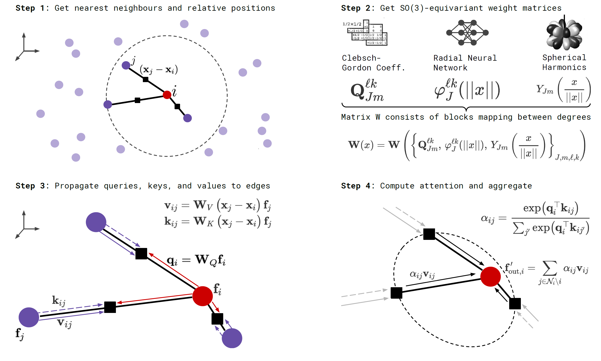

Equivariant GNNs¶
Preliminaries: Group Theory and Equivariance¶
This section is based on the exellent materials on equivariant neural networks by Andrew White.
-
Group \(G = \langle V, \cdot \rangle\): a set \(V\) equipped with a binary operation \(\cdot\) that satisfies closure, associativity, identity and inverse properties.
-
Group action \(\pi(g, x)\): \(\newcommand{\cX}{\mathcal{X}} G\times\cX \to \cX\) that satisfies identity and compatibility, i.e.\(\pi(g, \pi(h, x)) = \pi(gh, x)\).
Notes on the group elements
We focus on groups of transformations here. E.g. "rotate 60° around the \(z\)-axis" is an element of the \(\mathrm{SO}(3)\) group, which operates on 3D points (\(\newcommand{\R}{\mathbb{R}}\cX = \R^3\)).
Combining translations and rotations¶
-
Left coset: \(gH := \{ gh : h \in H \le G \}, \forall g \in G\)
-
Normal subgroup: \(N \triangleleft G \Longleftrightarrow \forall g \in G, gN = Ng \Longleftrightarrow \forall n \in N, \forall g \in G, gng^{-1} \in N\). Normal subgroups are invariant under conjugation.
- \(\forall g \in G, gNg^{-1}\) is an automorphism of N, i.e., \(gNg^{-1} \in \mathrm{Aut}(N)\).
-
(Outer) semidirect product: Given two groups \(N\) and \(H\) and a group homomorphism \(\phi: H \to \mathrm{Aut}(N)\), their outer semidirect product \(N \rtimes_\phi H\) is defined as:
- Underlying set: \(N\times H\),
- Group operation: \((n_1, h_1) \cdot (n_2, h_2) = (n_1\phi(h_1)(n_2), h_1h_2)\).
For \(N \triangleleft G\) and \(H \le G\), we can define \(\phi\) as \(\phi(h) = \phi_h\) where \(\phi_h(n) = hnh^{-1}\).
Example: \(\mathrm{SE}(3) = T(3) \rtimes \mathrm{SO}(3)\)
-
We first show that \(\mathrm{T}(3) \triangleleft \mathrm{SE}(3)\). \(\forall g \in \mathrm{SE}(3)\), we represent \(g\) as \(\newcommand{\vs}{\mathbf{s}}\begin{pmatrix}R&\vs\\0&1\end{pmatrix}\), \(\forall t \in \mathrm{T}(3)\), we represent \(t\) as \(\newcommand{\vt}{\mathbf{t}}\begin{pmatrix}I_3&\vt\\0&1\end{pmatrix}\), then \(g^{-1}tg = \begin{pmatrix}R^{-1}&-\vs\\0&1\end{pmatrix} \begin{pmatrix}I_3&\vt\\0&1\end{pmatrix} \begin{pmatrix}R&\vs\\0&1\end{pmatrix} = \begin{pmatrix}I&R^{-1}(\vs+\vt)-\vs\\0&1\end{pmatrix} \in \mathrm{T}(3)\).
-
We can decompose \(\forall g = \begin{pmatrix}R&\vt\\0&1\end{pmatrix} \in \mathrm{SE}(3)\) into a translation \(t = \begin{pmatrix}I_3&\vt\\0&1\end{pmatrix}\) and a rotation \(r = \begin{pmatrix}R&0\\0&1\end{pmatrix}\), s.t. \((t, r)\) is equivalent to \(g\). We now verify that \(g_2g_1 = (t_2\phi_{r_2}(t_1), r_2r_1)\). Since \(g_2g_1 = \begin{pmatrix}R_2R_1&R_2\vt_1+\vt_2\\0&1\end{pmatrix}\), it suffices to check that \(t_2\phi_{r_2}(t_1) = t_2r_2t_1r_2^{-1} = \begin{pmatrix}0&R_2\vt_1+\vt_2\\0&1\end{pmatrix}\) as \(r_2r_1 = \begin{pmatrix}R_2R_1&0\\0&1\end{pmatrix}\).
Equivariance¶
-
Input data \(\newcommand{\vr}{\mathbf{r}}\newcommand{\vx}{\mathbf{x}}f(\vr) = \vx\): function \(\cX \to \R^n\) where the domain \(\cX\) is a homogeneous space (usually just the 3D Euclidean space) and the image is an \(n\)-dim feature space.
-
\(G\)-function transform \(\newcommand{\bbT}{\mathbb{T}}\bbT_g: \cX^{\R^n} \to \cX^{\R^n}, f \mapsto f^\prime\): Given a group element \(g \in G\), where \(G\) is on the homogeneous space \(\cX\), \(G\)-function transform \(\bbT_g\) transforms \(n\)-dim functions on \(\cX\) such that \(f^\prime(gx) = f(x)\), i.e., \(\bbT_g(f)(x) = f^\prime(x) = f(g^{-1}x)\).
Example: Translation of an image
Input function: \(f(x, y) = (r, g, b)\) that specifies the pixel values for three channels at each pixel position.
Group element: \(t_{10,0}\) that stands for moving the image to the right by 10 pixels.
Output of G-function transform associated with \(t_{10,0}\): \(f^\prime(x, y) = f(x-10, y)\).
- \(G\)-Equivariant Neural Network \(\phi: \cX^{\R^n} \to \cX^{\R^d}\): Given a group element \(g \in G\), where \(G\) is on the homogeneous space \(\cX\), and \(\bbT_g\) and \(\bbT^\prime_g\) on \(n\)- and \(d\)-dim functions, respectively, \(\phi\) is a linear map such that \(\phi(\bbT_g f(x)) = \bbT^\prime_g\phi(f(x)),\ \forall f(x): \cX \to \R^n\).
Briefly...
"Transform then encode" has the same effect as "encode then transform".
- \(G\)-Equivariant Convolution Theorem: A neural network layer (linear map) \(\phi\) is \(G\)-equivariant if and only if its form is a convolution operator \(*\):
$$\newcommand{\dd}{\,\mathrm{d}}
\phi(f)(u) = (f * \omega)(u) = \int_G f^{\uparrow G}(u g^{-1}) \omega^{\uparrow G}(g) \dd \mu(g)
$$
where \(f: H \to \R^n\) and \(\omega: H^\prime \to \R^n\) are functions on quotient spaces \(H\) and \(H^\prime\), and \(\mu\) is the group Haar measure.
- Orbit of element \(x_0\): \(Gx_0 = \{gx_0: g \in G\}\).
- Stabilizer subgroup for \(x_0\): \(H_{x_0} = \{g \in G : gx_0 = x_0\}\).
- Orbit-stabilizer theorem: there is a bijection between the set of cosets \(G/H_{x_0}\) for the stabilizer subgroup and the orbit \(Gx_0\), which sends \(gH_{x_0} \mapsto gx_0\).
- Lifting up \(f\): \(f^{\uparrow G}(g) = f(gx_0)\).
- Projecting down \(f\): \(f_{\downarrow \cX}(x) = \frac{1}{|H_{x_0}|}\int_{gH_{x_0}}f(u)\dd \mu(u)\), where \(g\) is found by solving \(gx_0 = x\).
- Haar measure: a generalization of the familiar integrand factor you see when doing integrals in polar coordinates or spherical coordinates. E.g. the Haar measure for SO(3) with \(R_zR_yR_z\) group representation is \(\frac{1}{8\pi^2}\sin\beta\).
Briefly...
There is only one way to achieve equivariance in a neural network.
Example: SO(3)
- Function: defined on points on the sphere \(f(x) = \sum_i \delta(x - x_i)\), where \(\Vert x_i \Vert_2 = 1\).
- Group representation: \(R_z(\alpha) R_y(\beta) R_z(\gamma)\).
- Stabilizer \(x_0\): \((0, 0, 1)\). Note that \((0, 0, 0)\) is not on the sphere.
- Stabilizer subgroup \(H_{x_0}\): rotations that only involve \(\gamma\), i.e. \(R_z(0) R_y(0) R_z(\gamma)\).
- Coset for \(g = R_z(\alpha^\prime) R_y(\beta^\prime) R_z(\gamma^\prime)\): \(gH_{x_0} = \{ R_z(\alpha^\prime) R_y(\beta^\prime) R_z(\gamma^\prime + \gamma): \gamma \in [0, 2\pi]\}\).
- Point in \(\cX\) associated w/ this coset (by the orbit-stabilizer theorem): \(gx_0 = R_z(\alpha^\prime) R_y(\beta^\prime) R_z(\gamma^\prime + \gamma) x_0 = R_z(\alpha^\prime) R_y(\beta^\prime) x_0\).
- Quotient space \(G/H_{x_0}\): \(\mathrm{SO}(2)\).
- Lifted \(f\): Suppose \(g = R_z(\alpha) R_y(\beta) R_z(\gamma) \in G\), then \(f^{\uparrow G}(g) = f(gx_0) = f(R_z(\alpha) R_y(\beta) x_0)\).
Group Representation¶
- Linear representation of a group: Let \(G\) be a group on an \(n\)-dimensional vector space \(V\). A linear representation of \(G\) is a group homomorphism: \(\newcommand{\bbC}{\mathbb{C}} \rho: G \to \mathrm{GL}(m, \bbC)\) where \(\mathrm{GL}(\bbC)\) is the space of \(m\)-by-\(m\) square invertible matrices with complex numbers, that satisfies \(\rho(g_1g_2) = \rho(g_1)\rho(g_2)\).
- \(m\) is termed the degree of representation \(\rho\).
- Faithful representation: There is a unique representation for every group element.
- Unitary representation: \(\forall g \in G,\ \rho(g)\rho^\dagger(g) = I_m\). Equivalently, \(\forall u, v \in V, \langle \rho(g)u, \rho(g)v\rangle = \langle u, v\rangle\).
Trivial Representation
The trivial representation maps every group element to \(I_m\).
Linear group actions are valid representations
Suppose \(\pi(g, x)\) is a linear group action on \(V\). This implies \(V\) is a vector space. Define \(\rho(g): V \to V\) as a transformation on \(V\) s.t. \(\rho(g)(x) = \pi(g, x)\), then \(\rho(g_1g_2) = \rho(g_1)\rho(g_2)\). Also \(\forall x,\ \rho(e)(x) = \pi(e, x) = x \). Thus \(\forall x,\ \rho(g^{-1})(\rho(g)(x)) = \rho(e)(x) = x\), i.e. \(\rho(g)\) is invertible. Therefore, \(\rho\) is a linear representation of group \(G\).
-
The Unitarity Theorem: we can always choose an invertible matrix \(S\) (for finite groups) such that the representation \(\rho^\prime(g) = S^{-1}\rho(g)S\) is unitary.
- Without loss of generality, we can assume all representations we use are unitary or can be trivially converted to unitary.
-
Irreducible Representation (irrep): a representation that has only trivial subrepresentations.
- A linear subspace \(W \subset V\) is called \(G\)-invariant if \(\forall g \in G\) and \(\forall w \in W\), \(\rho(g)w \in W\).
- The co-restriction of \(\rho\) to \(\mathrm{GL}(W)\) is a subrepresentation.
- Composing irreps: $$\DeclareMathOperator{\diag}{diag} \rho^\prime(g) = S^{-1}\rho(g)S = \diag \left(\rho^{(1)}(g), \dots, \rho^{(k)}(g)\right) = \rho^{(1)}(g) \oplus \dots \oplus \rho^{(k)}(g) $$
-
Encoding input function into the irrep space: using the generalized Fourier transform,
\[\newcommand{\N}{\mathbb{N}} \hat{f}(\rho_i) = \int_G \rho_i(u)f^{\uparrow G}(u) \dd \mu(u), \quad i \in \N. \]where \(\rho_i\) is the \(i\)-th irrep of \(G\), and \(\dd \mu(u)\) is the group Haar measure.
-
Irreps on SO(3): The Wigner D-matrix is a unitary matrix in an irreducible representation of the groups SU(2) and SO(3). $$ D_{m'm}^{l}(\alpha ,\beta ,\gamma )\equiv \langle lm'|{\mathcal {R}}(\alpha ,\beta ,\gamma )|lm\rangle =e^{-im'\alpha }d_{m'm}^{l}(\beta )e^{-im\gamma } $$
\[ d_{m'm}^{l}(\beta )=[(l+m')!(l-m')!(l+m)!(l-m)!]^{\frac {1}{2}}\sum _{s=s_{\mathrm {min} }}^{s_{\mathrm {max} }}\left[{\frac {(-1)^{m'-m+s}\left(\cos {\frac {\beta }{2}}\right)^{2l+m-m'-2s}\left(\sin {\frac {\beta }{2}}\right)^{m'-m+2s}}{(l+m-s)!s!(m'-m+s)!(l-m'-s)!}}\right] \]where \(l \in \N\) for SO(3). \(D_{m'm}^{l}\) has shape \((2l+1)\times(2l+1)\) and acts on space spanned by \(l\)-th degree polynomials. See here for a more detailed explanation.
-
We can now replace convolutions of group functions with products of their irreducible representations. This is critical, since SO(3) convolutions would require a series of spherical integrals.
-
The first columns of the Wigner D-matrices are propto the spherical harmonics: \(D_{m0}^{l}(\alpha, \beta, \gamma) = \sqrt{2l+1} {Y_l^m}(\alpha, \beta)\).
-

Tensor-Field Networks¶
Tensor-field network (TFN)1 is a locally equivariant convolutional neural network.
Layer Overview¶
Tensor field networks act on points with associated features.
Input-Output A layer \(\newcommand{\cL}{\mathcal{L}}\cL\) takes a finite set \(S\) of vectors in \(\R^3\) and a vector in \(\cX\) at each point in \(S\) and outputs a vector in \(\newcommand{\cY}{\mathcal{Y}}\cY\) at each point in \(S\), where \(\cX\) and \(\cY\) are vector spaces:
Let \(D^\cX\) be a representation of SO(3) on a vector space \(\cX\). The desired rotation equivariance can be written as
where \(\left[\cR(g)\oplus D^{\cX}(g)\right](\vr_a, x_a) = \left(\cR(g)\vr_a, D^\cX(g)x_a\right)\).
Decomposing representation There are multiple instances (channels) of each \(l\)-th rotation-order irreducible representations. For rotation order \(l\), we implement a tensor \(V^{(l)}_{acm}\) with shape \((|S|, C_l, 2l+1)\), where \(C_l\) is the number of channels.
Choice of \(D^\cX\) The group elements are represented by Wigner D-matrices \(D^{(l)}\), which map \(g \in \mathrm{SO}(3)\) to \((2l+1)\times (2l+1)\) matrices. Note that \(D^{0}(g) = 1\) and \(D^{(1)}(g) = \cR(g)\).
The real sperical harnomics \(Y^{(l)}_m\) are equivariant to SO(3) (See G-function transform):
Point Convolution¶
Notation \(\vr\) is the coordinates of an input point relative to the convolution center, \(\hat{\vr}\) is \(\vr\) normalized to unit length, and \(r = \Vert\vr\Vert_2\).
Convolution filters With \(l_i\) and \(l_f\) as the rotation orders of the input and filter, respectively, we define the following rotation-equivariant filter \(F^{(l_f, l_i)}: \R^3 \to \R^{(2l_f+1) \times (2l_i+1)}\):
where \(R_c^{(l_f, l_i)}: \R_+ \to \R\) is a learnable kernel.
Combining representations w/ tensor products We need the layer output to also be a representation of SO(3), thus we have to combine the filter outputs.
The tensor product of two irreps \(u^{l_1}\) and \(v^{l_2}\) of orders \(l_1\) and \(l_2\) can be calculated as
where the \(C^{(l, l_1, l_2)} \in \R^{(2l+1) \times (2l_1+1) \times (2l_2+1)}\)s are Clebsch-Gordan coefficients. \((u \otimes v)_m^{(l)}\) is non-zero only when \(|l_1-l_2| \le l \le l_1+l_2\) and \(m = m_1 + m_2\).
Clebsch-Gordan coefficients
For \(0\otimes 0 \to 0\), \(C^{(0, 0)}_{(0, 0)(0, 0)} \propto 1\), which correspondns to scalar multiplication.
For \(1\otimes 0 \to 1\), \(C^{(1, i)}_{(1, j)(0, 0)} \propto \delta_{ij}\), which corresponds to scalar multiplication of a vector.
For \(1\otimes 1 \to 0\), \(C^{(0, 0)}_{(1, i)(1, j)} \propto \delta_{ij}\), which corresponds to dot product of vectors.
For \(1\otimes 1 \to 1\), \(C^{(1, i)}_{(1, j)(1, k)} \propto \epsilon_{ijk}\), which corresponds to cross products of vectors.
Layer Definition A point convolution of a type-\(l_f\) filter on a type-\(l_i\) input yields outputs at \(2\min(l_i,l_f)+1\) different rotation orders \(l_o\) (b/t \(|l_i - l_f|\) and \((l_i+l_f)\), inclusive):
What are we convolving?
We are convolving the kernel function \(W^{(l_o, l_i)}\) with the input function \(f^{(l_i)}\), where the latter is represented as Dirac function taking non-zero values on \(x_a\)'s only, i.e. \(f^{(l_i)}(\vr) = \sum_a V^{(l_i)}_{a} \delta(\vr - \vr_a)\):
The kernel lies in the span of an equivariant basis \(\{W^{(l_o, l_i)}_{l_f}\}_{l_f=|l_o-l_i|}^{l_o+l_i}\):
Self-Interaction¶
Self-interaction layers mix the components of the feature vectors of the same type within each point together. They are analogous to 1x1 convolutions, and they act like \(l_f = 0\) (scalar) filters. Suppose \(c^\prime\) and \(c\) are the input and output dimensions,
The same weights are used for every \(m\) for a given order \(l\). Thus, the \(D\)-matrices commute with the weight matrix \(W\), i.e. this layer is equivariant for \(l > 0\).
Equivariance for \(l = 0\) is straightforward because \(D(0) = 1\) (we may also use biases in this case).
Non-Linearity¶
The non-linearity layer acts as a scalar transform in the \(l\) spaces, i.e. along the \(m\) dimension.
where \(\Vert V \Vert_{ac}^{(l)} = \sqrt{\sum_m (V_{acm}^{(l)})^2}\) and \(\eta^{(l)}: \R \to \R\).
Since \(D\) unitary, \(\Vert D(g)V\Vert = \Vert V\Vert\), i.e. this layer is equivariant.
SE(3)-Transformers¶
SE(3)-Transformer2 is an equivariant attention-based model for 3D point cloud / graph data. It is basically a GAT with TFN weight matrices.
Compared to TFN, SE(3)-Transformers (1) allow a natural handling of edge features, (2) allow a nonlinear equivariant layer and (3) relieve the strong angular constraints on the filter (TFN filters only have learnable parameters in the angular direction).

Layer Overview¶
Recall that, given rotation orders \(k\) and \(l\), an \(k\)-to-\(l\) TFN layer (w/o nonlinearity) can be written as
where \(\mW^{lk}(\vx) = \sum_{J=|k-l|}^{k+l}R^{lk}_J(\Vert\vx\Vert)\mW_J^{lk}(\vx)\) and \(\mW_J^{lk}(\vx) = \sum_{m=-J}^J Y^J_m(\hat{\vx})\mQ^{lkJ}_{m}\). Here \(k\), \(l\), \(J\) correspond to \(l_i\), \(l_o\) and \(l_f\) in the TFN notations. The first term denotes self-interaction, or 1x1 convolution, and the second term denotes convolution.
The SE(3)-Transformer layer is defined as (\(\bigoplus\) is the direct sum, i.e. vector concatenation):
Similarly, the first term denotes self-interaction and the second term denotes attention. Equivariance is obvious as the attention weights are invariant (due to orthonormality of representations of SO(3), \((\mS_g\vq)^\top\mS_g\vk=\vq^\top\vk\)) and the value embeddings are equivariant w.r.t rototranslation.
Self-Interaction¶
Self-interaction is an elegant form of learnable skip connection. It is crucial since, in the SE(3)-Transformer, points do not attend to themselves. The authors propose two types of self-interaction layer, both of the form
Linear Same as TFN, weights per order are shared across all points. The self-interaction layer is followed by a norm-based non-linearity. Or, in math language, \(w_{i, c^\prime, c}^{ll} = w_{c^\prime, c}^{ll}\).
Attentive Weights are generated from an MLP. This is an invariant layer due to the invariance of inner products.